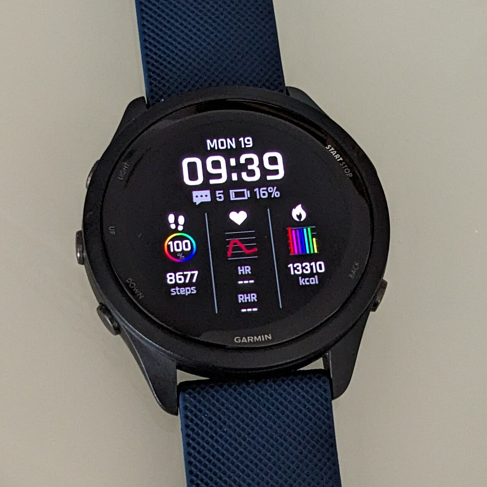

About this website
Sports technology includes cameras, wearable sensors, tracking systems, and software that help people understand the game. This website explains how these tools support athletes, assist officials, and give fans a closer look at sports without needing a technical background.
Baseball · Basketball · Soccer
Explore the technology

Athlete performance
Wearable devices and motion analysis help athletes review their training and understand their movement.
Read about athlete performanceSmart officiating
Replay and ball tracking give officials additional information when evaluating close calls.
Read about smart officiatingData and fan experience
Tracking data helps explain the movements behind a play and gives fans more ways to understand the result.
Read why sports data mattersWhy it matters
Technology helps us look beyond the final score. Coaches can study technique, officials can review important decisions, and fans can understand details they might otherwise miss. The information is most useful when people consider its limitations and apply their own judgment.